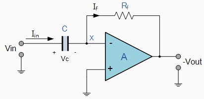
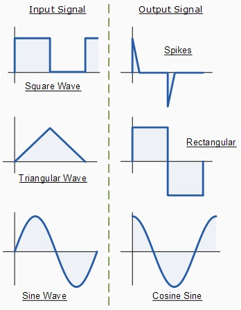

|  |
The input signal to the differentiator is applied to the capacitor. The capacitor blocks any DC content so there is no current flow to the amplifier summing point, X resulting in zero output voltage. The capacitor only allows AC type input voltage changes to pass through and whose frequency is dependent on the rate of change of the input signal. At low frequencies the reactance of the capacitor is "High" resulting in a low gain (Rf / Xc) and low output voltage from the Op-amp. At higher frequencies the reactance of the capacitor is much lower resulting in a higher gain and higher output voltage from the differentiator amplifier.
However, at high frequencies an Op-amp differentiator circuit becomes unstable and will start to oscillate. This is due mainly to the first-order effect, which determines the frequency response of the Op-amp circuit causing a second-order response which, at high frequencies gives an output voltage far higher than what would be expected. To avoid this high frequency gain of the circuit needs to be reduced by adding an additional small value capacitor across the feedback resistor Rf.
Op-amp Differentiator Waveforms
If we apply a constantly changing signal such as a Square-wave, Triangular or Sine-wave type signal to the input of a differentiator amplifier circuit the resultant output signal will be changed and whose final shape is dependent upon the RC time constant of the Resistor/Capacitor combination.
|  |